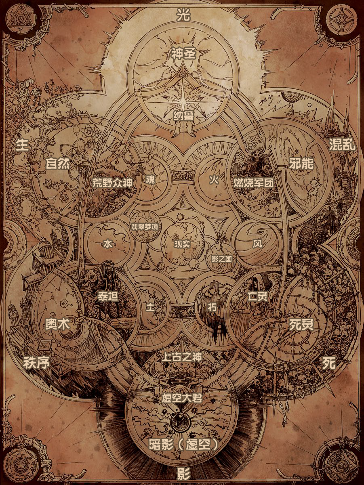
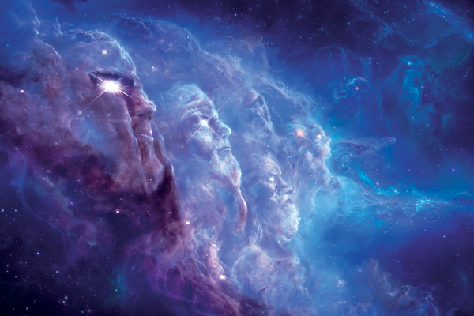
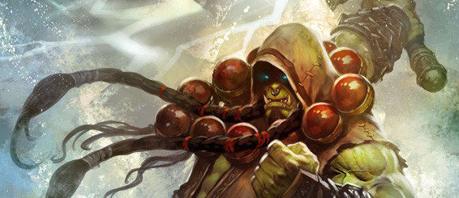
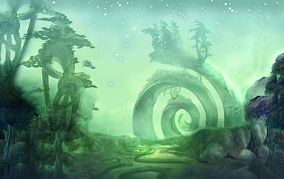
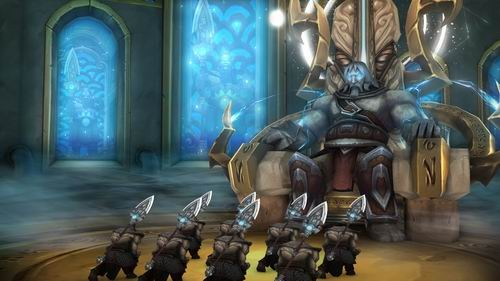

引言：
宇宙观
SlashChu 2016-12-30 星期五
关乎这遍及强大魔法和超凡存在的浩瀚宇宙，艾泽拉斯不过只是其中小小的一环。自万物诞生之初，星海中众多的力量便已左右着艾泽拉斯乃至其外的整个宇宙。群星为之履移斗转，而数之不尽的诸般世界和凡人文明，命运亦然不免为其掌控……

宇宙力
SlashChu 2016-12-30 星期五
光与影
光与影，乃是宇宙中至为根本的两重力量。二者尽管性质对立，却在整个宇宙的层面上两相依存、彼此共生。
纯粹的光与影所居存的领域位于现实世界的外侧，但实体宇宙中却仍能得见两者形貌的一隅：光将形式表现为神圣魔法，而亦称“虚空”的暗影则托以了暗影魔法的形貌。
生与死
生与死的力量，掌控着实体宇宙的一切有生之物。生命的能量通常被认知为自然魔法，其所促进的正是万物的成长与新生。而死亡，则表现为死灵魔法的形式，充作生命的对立面而存在，以其无从遁逃的力量在凡人的心神中种下绝望，将其所触及的一切导向纷乱的腐朽，并最终引致彻底的灭亡。
秩序与混乱
秩序与混乱这两重力量，统辖着实体宇宙的世界体系。秩序一方常在现实世界展现为难以驾驭的奥能，将其操控所需的乃是极致的严谨和心无旁骛。而混乱，则与之相对地展现为毁天灭地的邪能，藉汲取有生之物的性命来维系这凶暴而极易沉溺的力量。
元素
火、风、土、水四大元素，即是实体宇宙中一切物质的基本构造。众多的萨满文化中，大多都在寻求与元素和谐共处，抑或是迫其俯首称臣，而将其意图加以实行的力量，便是灵魂和衰朽。期冀与元素之间建立平衡的一方，便会依灵魂(时而亦被萨满称为“第五元素”，或被武僧称为“气”)的力量行事，这孕育生命的力量本身即堪以将存乎世间的万物相互联系、彼此合一。而衰朽的力量，则被那些意欲迫使元素臣服的萨满利用，以期将元素充作自己的武器。

元素二象性
SlashChu 2016-12-30 星期五
众多的萨满文化都发现了这样一个现象：元素会对种种的情感施加影响。而凡人们也正是由此，才时常将元素与众多或积极或消极的相异情感联系在一起。
火
积极特质：热情
消极特质：暴怒
风
积极特质：敏锐
消极特质：疯狂
土
积极特质：恒心
消极特质：顽固
水
积极特质：平静
消极特质：犹疑
灵魂
积极特质：勇敢
消极特质：天真
衰朽
积极特质：干练
消极特质：冷酷

众领域
SlashChu 2016-12-30 星期五
无垠黑暗止境
无垠黑暗止境，即是浩瀚的实体宇宙，其中遍布着不可胜数的群星、世界和凡人建立的文明。
众多的世界漫无止境地在无垠黑暗止境中漂泊不休，而艾泽拉斯——魔兽世界——也不过只是其中小小的一环罢了。
扭曲虚空
扭曲虚空，是为独立于无垠黑暗止境的灵体位面，其边界永无止境地彼此交汇的两股力量，即是光与虚空，而这片领域也由是长久不息地泛滥着动荡。时而，整个扭曲虚空所遍布的激荡魔力亦会侵入实体宇宙，并将其中的现实世界扭曲得面目全非。
翡翠梦境
翡翠梦境这一缥缈的国度之中，居存着众多的灵魂和自然不羁的一面，与整个艾泽拉斯并行存在。名唤守护者的强大存在亲手打造了这个位面，以期作为记录艾泽拉斯动植物演化历程的图谱之用。这两大领域如若同一地影响着彼此：当实体宇宙中的生命有所起伏之时，翡翠梦境所容贮的灵魂能量亦会应时变化，以期与之维持一致。
纵然翡翠梦境连结着实体世界，对凡人的心智而言也仍且是太过异样离奇，而无法彼此相容。不过，若是藉由导引德鲁伊魔法，部分凡人便能在沉眠的状态下游历翡翠梦境，并随心所欲地改换其中的景致——话虽如此，这些痕迹却并不会永久地遗留下来。
而在这睡梦的旅途中，时间和距离亦然并非恒久不变。苍翠的大地上尽是流转不休的蛮荒林野，如风般掠过的则是众多的灵魂，那乍一看去确有形体的存在顷刻间便会失却形影，而原本貌似岿然不动的光景，亦然会在眨眼之间面目全非。
影之国
如若翡翠梦境，影之国的存在并不依附于艾泽拉斯。若说翡翠梦境代表生命，那影之国便意指死亡——衰朽遍及这宛若梦魇的国度，而将其中错综复杂的灵魂位面的悉数拥满的，更尽皆是离脱生者国度的逝去亡魂。
影之国究竟自何而来尚无定论，但早在实体宇宙的凡人诞生之初，这一国度便已然存在。众多的凡人相信自身一经死去，灵魂便会被引致影之国的黑暗当中，永世不得脱身。而今也仍有凡人期求能在死后去往更加光明的所在，而非在影之国冰冷的牢狱中糜烂。

宇宙的住民
SlashChu 2016-12-30 星期五
虚空大君
虚空大君，其为纯粹的暗影能量所成的扭曲存在，残忍和冷酷远非凡人的智识所能思及。虚空大君的餮求永无止境，其所践行的一切尽皆只为将实体宇宙中的物质和能量吞噬殆尽。
虚空大君在自然状态下存乎现实世界的外侧，而唯有其中至为强大的个体，才能将其存在极为短暂地显现于实体宇宙中。即便如此，虚空大君也仍需耗用不可胜数的物质和能量，以期维持其位于现实世界的存在。
纳鲁
纳鲁生性仁慈，如若有生的神圣能量。即便放眼整个无垠黑暗止境，只怕也仅有纳鲁堪称是至为纯粹的光之具现，他们立誓为世间的凡人文明悉数带去和平和希望，更甘于倾身对抗意欲将森罗万象尽数席卷的虚空。
泰坦
燃烧军团，其为无垠黑暗止境中最擅毁灭的势力，这支恢弘的恶魔大军由堕落泰坦萨格拉斯一手创造，以期将森罗万象抹灭殆尽。燃烧军团在无数个世界间往来，以邪能将所及之处的一切悉数剿灭，而在这罪恶的燃烧远征中灭亡的世界和凡人文明究竟何等数目，已是无从知晓。
燃烧军团的恶魔兵士众多，适应能力亦然极强。他们的灵魂直接连结着扭曲虚空，故而难以被彻底消灭——即便恶魔在实体宇宙中死去，其灵魂也仍会退回扭曲虚空，在具以形体后卷土重来。若要将恶魔的灵魂彻底消灭，将其杀死的场所便必须符合如下的条件：扭曲虚空、扭曲虚空与凡人世界彼此交汇的动荡涡流，抑或是燃烧军团的能量所席卷的区域。
燃烧军团
如若翡翠梦境，影之国的存在并不依附于艾泽拉斯。若说翡翠梦境代表生命，那影之国便意指死亡——衰朽遍及这宛若梦魇的国度，而将其中错综复杂的灵魂位面的悉数拥满的，更尽皆是离脱生者国度的逝去亡魂。
影之国究竟自何而来尚无定论，但早在实体宇宙的凡人诞生之初，这一国度便已然存在。众多的凡人相信自身一经死去，灵魂便会被引致影之国的黑暗当中，永世不得脱身。而今也仍有凡人期求能在死后去往更加光明的所在，而非在影之国冰冷的牢狱中糜烂。
泰坦
燃烧军团，其为无垠黑暗止境中最擅毁灭的势力，这支恢弘的恶魔大军由堕落泰坦萨格拉斯一手创造，以期将森罗万象抹灭殆尽。燃烧军团在无数个世界间往来，以邪能将所及之处的一切悉数剿灭，而在这罪恶的燃烧远征中灭亡的世界和凡人文明究竟何等数目，已是无从知晓。
燃烧军团的恶魔兵士众多，适应能力亦然极强。他们的灵魂直接连结着扭曲虚空，故而难以被彻底消灭——即便恶魔在实体宇宙中死去，其灵魂也仍会退回扭曲虚空，在具以形体后卷土重来。若要将恶魔的灵魂彻底消灭，将其杀死的场所便必须符合如下的条件：扭曲虚空、扭曲虚空与凡人世界彼此交汇的动荡涡流，抑或是燃烧军团的能量所席卷的区域。
上古之神
荒野众神是生命和自然的具现，从属两片领域的存在——荒野众神既居于艾泽拉斯的实体世界，其灵魂亦与翡翠梦境彼此连结。而这几多的荒野众神展现的形态，便是狼、熊、虎抑或禽鸟之类的庞大动物。
元素之灵
原始的元素之灵，即是由火、风、水、土独立构成的混沌存在。宇宙苏生，众多世界随之成型，而其最初的住民便是这些元素。它们展现出的造型和体态几可说是千变万化，而每一位元素的性情更是彼此大相径庭；但即便如此，元素之灵的特质也依然深受其元素的天性影响。
而第五元素——灵魂——亦然举足轻重地左右着这些元素之灵的性情。灵魂之力过剩的世界中所居住的元素，大多温驯而少有欲求；而与之相对地，灵魂之力稀缺的世界所诞生的元素，便尽皆是些好勇斗狠的暴虐之辈。
亡灵
亡灵乃是业已死去的凡人，徘徊于生与死的界限之间。这些不幸的存在从遍及整个宇宙的死灵能量中获取力量，并大多深陷仇怨和憎恨的驱使，意欲将他们永不能再复得到的生命毁灭殆尽。
